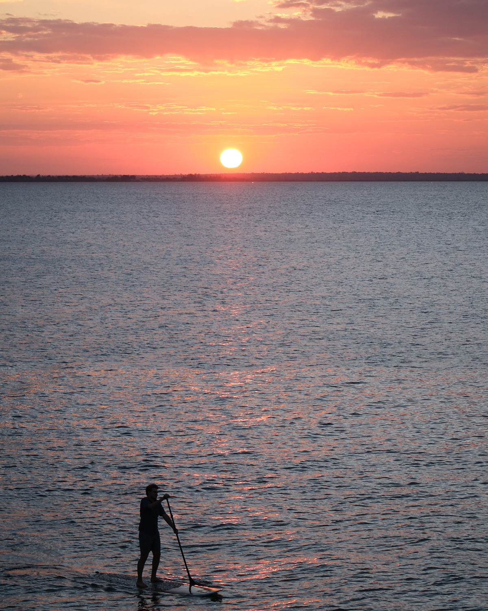
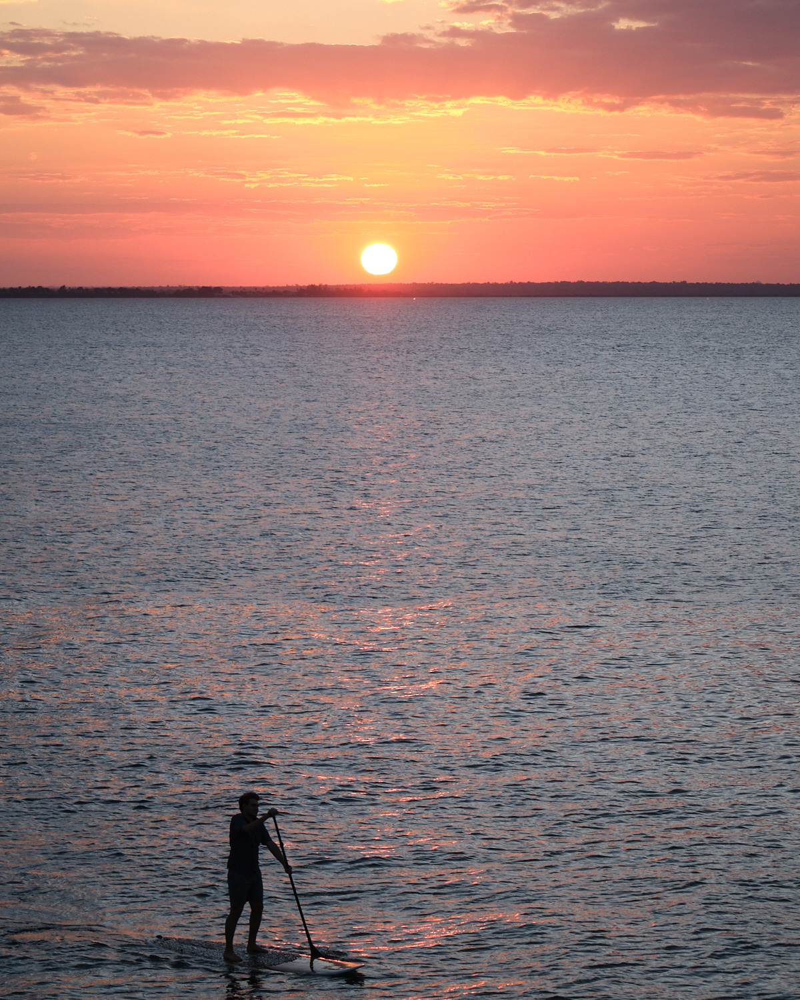

Micah, Jacob and I travelled through Mozambique with the leading behavior change organization in conservation of oceans and fisheries, Rare.org. We visited sites where Rare is saving reef and ocean ecosystems, met with local leaders, and enjoyed this beautiful and friendly country. Below, I’ll share some photos, explain more about why Rare’s work is so impressive, and also connect to our own work in educational research. I’m going to focus on our visit to Ilha De Mozambique, the most significant part of the journey.
Welcome to Ilha de Mozambique!
Mozambique is an important place for conserving oceans and fisheries because it has such a long coast (~1700 miles long) and very high biodiversity. Ilha de Mozambique, a historically important island, was a two-hour flight from Maputo (the capital). From southern Mozambique, we spent eight hours travelling to Ilha via a combination of a bus, a plane, and vans. Whereas Maputo is a modern city, the area around Ihla consist of small villages with roadside markets and travel is slow, as this video shows.
After our long road journey, we were surprised and delighted to be welcomed by a singing and drumming group. Note the mascot of Rare’s work, the dancing fish, behind the singers. I’ll explain the mascot’s importance later. The group then escorted us to the plaza for an extended dance show, featuring multiple groups. After the mayor and Rare’s chairman joined the line, we all got up and danced.
Fish Forever
Most men in the Ihla work as fisherman, rowing or sailing in single-person boats to their favored spots every morning. And we saw many women gleaning shellfish each day at low tide. Rare works with local CCPs, community-led fishery councils to strengthen their own self-governance. Rare always has a dual goal: better conservation of fish and better economic well-being for the community. In one example, Rare has worked with CCPs to ban the use of mosquito nets for fishing because they kill the baby fish. Rare’s campaign, overall, is called Fish Forever. They also manage no-catch zones and other measures to allow fish to reproduce and oceans to stay healthy.
We’ve been supporting Fish Forever for about 15 years, in memory of my father, Ira A. Roschelle, who loved scuba diving and tropical reefs. But our family’s journey with Rare goes back to when Micah was 6 or 7 years old. We asked him to pick a charity he might want to support and follow, and suggested he pick an animal. He said “parrots.” It was hard to find an NGO for parrots, but we found Rare. Their origin story is about saving the parrots of St Lucia. Later, Micah and I met Paul Butler and it was a transformative experience. We’ve been supporters of Rare ever since!
Savings Clubs and Fishery Data
Our family has donated to RARE in support of micro-banking in Mozambique, where women (and some men) form a club of about two dozen members. Each week they add money to a shared lockbox and then jointly decide on loans and investments. One of us asked “What do you talk about when the club meets?” The women responded “Our goals.” They want to save enough money to buy equipment to process fish, so that instead of it spoiling, they can get it to market. We also met a local fish middleman. With a smart phone from Rare and a specialized app, he shared how for the first time he can now calculate his weekly profits, and decide when it makes sense to borrow money so he can do more transactions. Below in the photo is a presentation from a local woman who took Rare’s IT Skills course and then became an expert in Rare’s fishery data website. She demonstrated how she can analyze data about the local community’s catch (and compare to other communities).
Climate Change Challenges
Recently, this area of Mozambique sustained two cyclones. Formerly, cyclones occurred sporadically over years; not two in a single year. The recent cyclones caused enormous damage to Ilha de Mozambique and signs of this damage were everywhere. Ihla is an historic Portugese settlement, and the decay can look photogenic on the old buildings, as in the photo collection that follows. Elsewhere on the island, where people actually live, the damage was profound and still an obvious impact on people’s lives.
Click any picture to see these larger


Beauty, Resilience, and Sunsets
The area surrounding Ilha is beautiful and the fisheries and people are recovering from the cyclones. We took a snorkling trip to a nearby uninhabited island, and enjoyed the abundance of reef fish species. We learned about how the Savings Clubs also help with community resilience, for example, they made loans to help fisherman repair boats and get back to work faster. Afterwards, Micah paddled through the perfect sunset.
 

Amazing People with a Comprehensive Strategy
One of the joys of traveling with Rare was spending time with their Mozambique-based staff, who travelled with us. Amazing people! And the impact was obvious because everywhere we went, local leaders were willing to meet with us and discuss how they are working with Rare. Rare’s people have built extraordinary relationships throughout the country, from national politics to local fishery councils. We met the game warden at the national park, many mayors and local elected officials, and community members with whom Rare is working.
Here I am with Bento, who was always willing to explain local culture and political challenges with us. He also designed our hats!
Rare’s overall focus is on behavior change—-how do you work with local people so that everyday practices change? When they succeed, sustainability can occur because locals have led the change. On one simple level, Rare works with local groups to design conservation campaigns. Hence, the dancing fish mascots. These are popular symbols of the movement Rare is facilitating.
It was good to spend a week together, because their overall approach is more comprehensive than a campaign with a catchy mascot. Here’s a page from their booklet. Community-led management is at the center, as we saw. But they also work on governance, data, enforceable fishery policies, and micro-finance. And they are building a national network to scale their efforts. It’s a comprehensive approach, and that is needed because there is a dearth of local institutions for people to rely on. I really enjoyed having the week to slowly digest all that Rare is doing in Mozambique (and worldwide) and how the different parts fit together. It’s truly an impressive organization.
What Success Looks Like
The peak of our visit was National Day, which featured a gathering of local politicians and villagers in the town square. We were special guests and Rare was featured throughout the program. The picture below tells the story and you can also check out this video.

Here, Rare worked with a local artist who has written a song about saving the fish. The song is on the radio, so everyone knows it and they are singing along. The dancing fish, Rare’s mascots, are on stage in the background. Success is when its national day and the whole village is singing your song. That’s community-led change. And in the photo below, a delighted village elder sits under the canopy, cheering them on.
I can only cover so much, and in this blog didn’t describe some of the rich Portugese and colonial history that is available on Ihla de Mozambique, making it a fascinating place to visit. Yet, I’ll include this one photo from after the village square celebration, as a symbol of the current population making its way in the shadow of the Portugese church and colonial infrastructure.
A Tug-of-War and Soccer Matches
Now to keep it all in perspective, it’s only fair to report that the REAL EXCITEMENT on national day was not the official political celebration. What really got the townspeople out was games on the beach, like a hard-fought tug-of-war. (We found that the dancing fish took off his costume at the bar, and was cooling down under the thatched roof.) The agony of the effort and the thrill of victory!
Then we went to see the women’s soccer match, which was played in a court with low walls. Afterwards, we joined the procession with the whole town to the men’s match. I am happy to report that “the flop” is alive and well in Mozambique football.
These kids were excited to pose for my photo as they celebrated a win!
Educational Research Reflections
I am a learning scientist and an educational researcher. I found much to think about for the future of educational research as I visited Mozambique with Rare. Both improving education and saving fisheries are complex, multidimensional problems. While there are important scientific and technical dimensions to the work, at the end of the day, both require sophistication in working with people to build, implement and sustain solutions. I love that Rare is so community-based, and like our work in education, focuses on co-designing policies and practices with local leaders and practitioners. And of course, in both cases, the key to doing great work is hiring the best people and creating excellent organizational systems for them to work within.
I found much to think about in how they organize campaigns for their work, including the role of the mascot, the songs, and engaging local politicians. We could do this better in education. I also thought about how they intertwined micro-finance with behavioral change to both improve lives and improve the fisheries. The challenges that Rare is taking on in Africa are really tough, and they are making progress, and that left me inspired.
Closing with Two Thumbs Up
These local kids were riding their scooter everyday outside our hotel. Africa is the most youthful continent and we owe these kids (and children everywhere) a better world.
Ihla De Mozambique offered an amazing set of experiences. We were witnesses to challenging conditions, programmatic successes, the ravages of cyclones and the resilience of people who are rebuilding. I learned so much by spending the week with Rare. I hope through this blog, I can share a bit of the inspiration we found.
Links
- Rare’s program in Mozambique
- African Wildlife Foundation, a Rare partner on our trip
- Our hotel, which was recently rebuilt after the cyclone
- Portugese history in Ilha de Mozambique